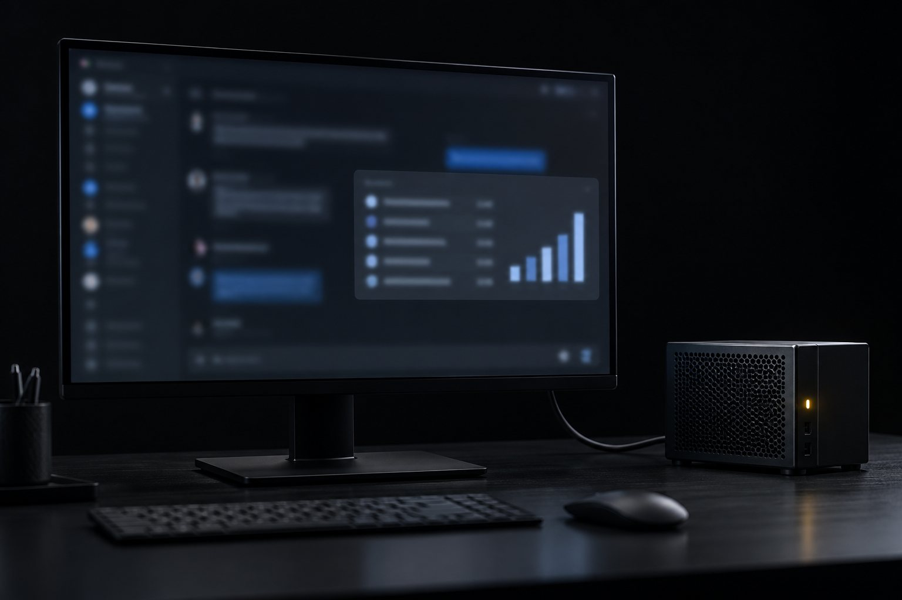

E18 · El vínculo
5 minEjecuta el bloque app-info.
Listo cuando: la salida tiene "hasApp":true,"toolName":"ver_turmas" y "resourceMimeType":"text/html;profile=mcp-app", y saída: 0.
Clase 7 · 15 min
A veces el texto no basta: una lista con colores, un gráfico, un formulario. MCP Apps es la extensión oficial que conecta una tool con una página HTML que el cliente dibuja en un iframe aislado. En esta clase conectas un panel a la tool ver_turmas y compruebas el vínculo sin necesidad de abrir un cliente.
Comenzar la lección
Objetivo: conectar una interfaz HTML a una tool con MCP Apps y comprobar el vínculo con el Inspector, sin abrir ningún cliente.
Haz clic en cada etapa.
MCP Apps es la primera extensión oficial del MCP (io.modelcontextprotocol/ui), anunciada el 26/01/2026 con soporte en Claude (web y desktop), Goose y VS Code Insiders.
app.mjs reutiliza el servidor de turmas y agrega una tool con interfaz.
// app.mjs — el servidor de turmas + un MCP App (extensión oficial io.modelcontextprotocol/ui):
// la ferramenta ver_turmas apunta a la interfaz ui://turmas/painel.html, que el cliente
// dibuja en un iframe aislado. Un cliente sin soporte para MCP Apps recibe el texto normal.
import { readFileSync } from 'node:fs';
import { createRequire } from 'node:module';
import { serveStdio } from '@modelcontextprotocol/server/stdio';
import { registerAppTool, registerAppResource, RESOURCE_MIME_TYPE } from '@modelcontextprotocol/ext-apps/server';
import * as z from 'zod/v4';
import { createServer, TURMAS } from './servidor.mjs';
const URI = 'ui://turmas/painel.html';
// La clase App viene lista en el paquete (app-with-deps.js); la View es un solo HTML, sin build.
// Para que quepa en un solo <script>, cambiamos el "export {… X as App …}" final por "const App = X;".
const bruto = readFileSync(createRequire(import.meta.url).resolve('@modelcontextprotocol/ext-apps/app-with-deps'), 'utf8');
const exporta = bruto.match(/export\s*\{([^}]*)\};?\s*$/);
const nomeApp = exporta[1].match(/(\w+)\s+as\s+App\b/)[1];
const appJs = bruto.slice(0, exporta.index) + `\nconst App = ${nomeApp};\n`;
const html = readFileSync(new URL('./painel.html', import.meta.url), 'utf8').replace('/*APP_JS*/', () => appJs); // función: el bundle tiene "$&" que el replace leería como patrón
export function createServerComApp() {
const server = createServer();
registerAppTool(server, 'ver_turmas', {
title: 'Ver turmas (painel)',
description: 'Mostra as turmas com vagas num painel. Só leitura.',
inputSchema: z.object({ termo: z.string().min(2) }),
outputSchema: z.object({ turmas: z.array(z.object({ id: z.string(), titulo: z.string(), vagas: z.int() })) }),
annotations: { readOnlyHint: true },
_meta: { ui: { resourceUri: URI } }
}, async ({ termo }) => {
const turmas = TURMAS.filter(t => t.titulo.toLowerCase().includes(termo.toLowerCase()));
return { content: [{ type: 'text', text: `${turmas.length} turmas` }], structuredContent: { turmas } };
});
registerAppResource(server, 'Painel de turmas', URI, { description: 'Lista visual das turmas' },
async () => ({ contents: [{ uri: URI, mimeType: RESOURCE_MIME_TYPE, text: html }] }));
return server;
}
if (import.meta.url === `file://${process.argv[1]}`) {
serveStdio(createServerComApp);
console.error('turmas + MCP App: servidor no stdio');
}<!doctype html>
<html lang="pt-BR">
<head>
<meta charset="utf-8">
<title>Turmas</title>
<style>
body { font: 15px/1.4 system-ui, sans-serif; margin: 12px; color: #111; }
li { margin: 4px 0; }
.zero { color: #a00; }
</style>
</head>
<body>
<h3>Turmas encontradas</h3>
<ul id="lista"><li>aguardando o resultado da ferramenta…</li></ul>
<script type="module">
/*APP_JS*/
// A View conversa com o cliente (host) por postMessage; a classe App cuida do aperto de mão.
const app = new App({ name: 'painel-turmas', version: '1.0.0' }, {});
app.ontoolresult = ({ structuredContent }) => {
const lista = document.getElementById('lista');
lista.replaceChildren(...(structuredContent?.turmas ?? []).map(t => {
const li = document.createElement('li');
li.textContent = `${t.titulo} — ${t.vagas} vagas`;
if (t.vagas === 0) li.className = 'zero';
return li;
}));
};
await app.connect();
</script>
</body>
</html>Para que la página quede en un solo HTML, sin build, el kit incrusta el app-with-deps.js del paquete y cambia el export final por una constante. Funciona con el ext-apps 2.0.3 que fija el kit; en una versión nueva puede romperse.
En un proyecto de verdad, sigue el quickstart oficial de MCP Apps (página con bundler, o las plantillas listas del repositorio ext-apps).
--app-info lee los metadatos de interfaz de cada tool sin llamar a ninguna.
cd ~/projetos/formacao-webmcp-mcp-v72/kit npx -y @modelcontextprotocol/inspector@2.11.0 --cli node app.mjs --method tools/list --app-info echo "saída: $?"
turmas + MCP App: servidor no stdio
{"hasApp":false,"toolName":"buscar_turmas"}
{"hasApp":false,"toolName":"reservar_vaga"}
{"hasApp":true,"toolName":"ver_turmas","resourceUri":"ui://turmas/painel.html","resourceMimeType":"text/html;profile=mcp-app"}
saída: 0Solo ver_turmas tiene interfaz. Para ver el panel dibujado, conecta el servidor a un cliente con soporte para MCP Apps; Claude Code en la terminal muestra solo el texto del resultado.
Verificar y cambiar el panel.
Ejecuta el bloque app-info.
Listo cuando: la salida tiene "hasApp":true,"toolName":"ver_turmas" y "resourceMimeType":"text/html;profile=mcp-app", y saída: 0.
Cambia resourceUri por ui://turmas/outro.html en app.mjs, ejecútalo de nuevo y después deshaz el cambio.
Listo cuando: la línea de ver_turmas pasa a mostrar "resourceError":"Resource not found: ui://turmas/outro.html"; al deshacerlo, vuelve "resourceMimeType":"text/html;profile=mcp-app".
Cambia el painel.html para mostrar solo grupos con plaza y ejecuta la prueba de la clase 8.
Listo cuando: npm test → ℹ fail 0 (el panel no rompe el servidor).
Pregunta 1 de 4
¿Cómo le dice una tool al cliente que tiene interfaz?competencia
Pregunta 2 de 4
El client no tiene soporte para MCP Apps. ¿Qué pasa con ver_turmas?competencia
Pregunta 3 de 4
¿Dónde se ejecuta el panel?
Pregunta 4 de 4
¿Por qué el kit dice que incrustar el bundle es un atajo?
Elige una alternativa. La explicación aparece después de tu intento.